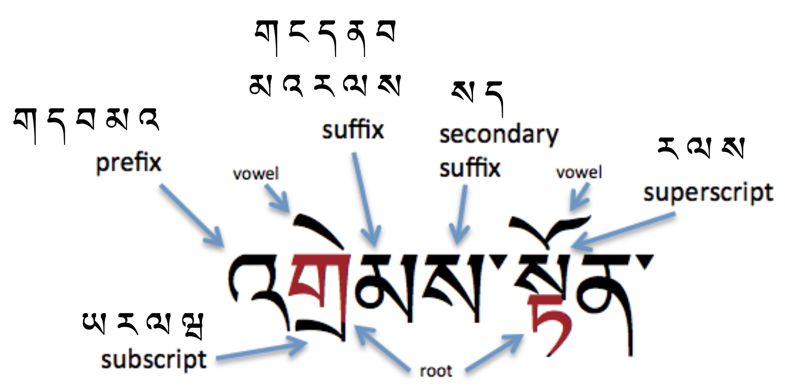

This document points to resources for the layout and presentation of text in languages that use the Tibetan script. The target audience includes developers of Web standards and technologies, such as HTML, CSS, Mobile Web, Digital Publications, and Unicode, as well as implementers of web browsers, ebook readers, and other applications that need to render Tibetan text.
This document points to resources for Tibetan script layout and text support on the Web and in eBooks. These requirements provide information for Web technologies such as CSS, HTML and digital publications about how to support languages written using the Tibetan script. The information here is developed in conjunction with a document that summarises gaps where the Web fails to adequately support the Tibetan script.
The editor's draft of this document is being developed in the GitHub repository Tibetan (tlreq), with contributors from the W3C Internationalization Interest Group. It is published by the Internationalization Working Group. The end target for this document is a Working Group Note.
To make it easier to track comments, please raise separate issues or emails for each comment, and point to the section you are commenting on using a URL.
Some links on this page point to repositories or pages to which information will be added over time. Initially, the link may produce no results, but as issues, tests, etc. are created they will show up.
Links that have a gray color led to no content the last time this document was updated. They are still live, however, since relevant content could be added at any time. When the document is updated, links that now point to results will have their live colour restored.
This document was created by Richard Ishida.
See also the GitHub contributors list for the Tibetan Language Enablement project, and the discussions related to the Tibetan script.
This document points to resources for Tibetan script layout and text support on the Web and in eBooks. These resources provide information for developers of Web technologies such as CSS, HTML and digital publications, and for application developers, about how to support languages written using the Tibetan script. They include requirements, tests, GitHub discussions, type samples, and more,
The document focuses on typographic layout issues. For a deeper understanding of the Tibetan script and how it works see Tibetan Orthography Notes, which includes topics such as: Phonology, Vowels, Consonants, Encoding choices, and Numbers.
This document should be used alongside a separate document, Tibetan Gap Analysis, which describes gaps in language support for users of the Tibetan script, and prioritises and describes the impact of those gaps on the user.
Gap reports are brought to the attention of spec and browser implementers, and are tracked via the Gap Analysis Pipeline. (Filter for Tibetan script items)
The document Language enablement index points to this document and others, and provides a central location for developers and implementers to find information related to various scripts.
The W3C also has a repository with discussion threads related to the Tibetan script, including requests from developers to the user community for information about how scripts/languages work, and a notification system that tracks issues in W3C working groups related to the Tibetan script. See a list of unresolved questions for Tibetan experts. Each section below points to related discussions. See also the repository home page.
Tibetan can be written using two different styles: དབུ་ཅན dbu can with a head, the block style of the Tibetan script used in print, pronounced u.cen; and དབུ་མེད dbu med headless, the cursive style of the Tibetan script used in shorthand and calligraphy, pronounced u.me. This page concentrates on the former. Pronunciations are based on the central, Lhasa dialect.
Historically, Tibetan text was written on loose-leaf sheets called pechas, ( དཔེ་ཆ pé.t͡ɕʰá book, scripture ). Some of the characters used and formatting approaches are different in books and pechas.
Tibetan text runs left to right in horizontal lines.
Words boundaries are not indicated. However, Tibetan words are made up of one or more units called tsheg-bar which are basically equivalent to phonological syllables. The tsheg-bar units are separated using ་ U+0F0B TIBETAN MARK INTERSYLLABIC TSHEG.
These tsheg-bar units are composed of structural elements that include vowel signs and consonants used as prefixes, root characters, subscripts, superscripts, suffixes, and secondary suffixes. A common realisation includes a stack and additional consonants to either side of the root consonant. These may indicate syllable-final consonant sounds, but more often than not they qualify or modify the root value, and are not associated with their nominal sound value. The actual pronunciation of Tibetan is usually much more simple than a typical romanisation would suggest. For example, the word བཀོད kǿː to create is transcribed as bkod.
To write the sounds of the standard Lhasa dialect, Tibetan uses 28 consonant letters (plus their subjoined forms). 6 more letters are used to write Sanskrit.
A distinguishing feature of Tibetan is the set of separate code points for subjoined consonants, used to create consonant stacks. Of the 77 combining characters in the Tibetan block, 48 represent subjoined consonant forms. Unlike many other Indic scripts, the modern Tibetan orthography doesn't use a virama to create stacks.
Tibetan is an abugida with one inherent vowel. When writing the Lhasa dialect, other post-consonant vowels are represented using 4 vowel signs, all combining marks.
There are no pre-base, circumgraph, or multipart vowels in the Tibetan used to write the Llasa dialect (though there are when writing in Sanskrit).
Standalone vowels are written by adding vowel signs to either འ U+0F60 TIBETAN LETTER -A or ཨ U+0F68 TIBETAN LETTER A, depending on the tone.
Sanskrit vowels written in Tibetan use additional vowel signs and combining marks, some of which represent diphthongs, and some of which form circumgraphs or multipart characters, depending on the encoding.
Tone is indicated by the choice of root character and/or its associated prefixes and superscripts.
Modern Tibetan writing uses few punctuation marks or symbols, but the Tibetan script block in Unicode contains many of these.
Tibetan has its own set of numbers.
The following diagram shows characters in all of the syllabic positions, and lists the characters that can appear in each of the non-root locations. The two-syllable word in the example is འགྲེམས་སྟོན 'grems-ston ɖɹemton exhibition.

See more information about how the various parts of the tsheg-bar work together.